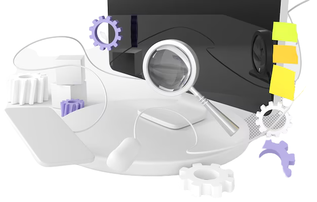
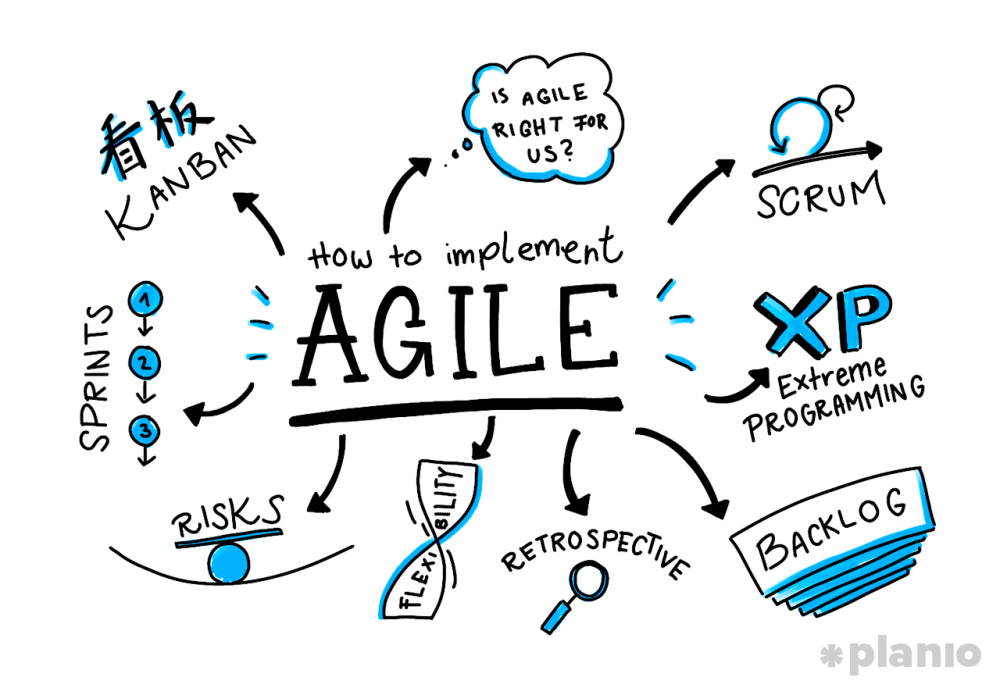
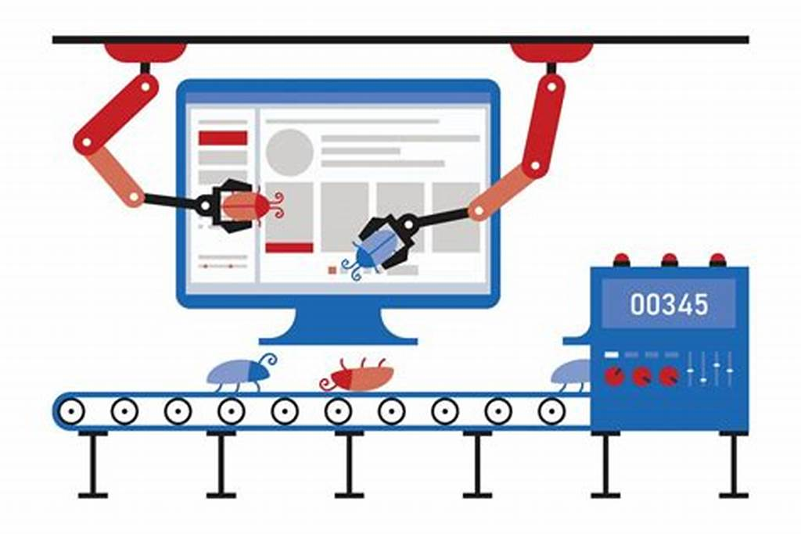

Sobre mim, analista em engenharia e qualidade de sistemas
Estudante em desenvolvimento de Sistemas
Entusiasta de novas tecnologias
Uma pessoa simples que aproveita o bom da vida
ÁREAS DE CONHECIMENTO

O que são os testes de software
Os testes de software e suas características
Qualidade de software
Certificação e auditoria para qualidade de sistemas informatizados

Ciclo de vida de um software
Modelos de gestão de projetos
Metodologia Rup
Implementando o modelo Rational Unified Process

Metodologias Ágeis
Gestão com Scrum, XP e Kanban

Testes Automatizados
Ferramentas e tipos de testes para sistemas informatizados
Ambientes virtualizados
Melhorando o desempenho com ambientes virtuais
Funcionalidades não essenciais
Modelos de testes funcionais para qualidade de software
Funcionalidades Essenciais
Refatoração de código e melhoria de processamento
Diagnósticos
Implementação de correções de bugs